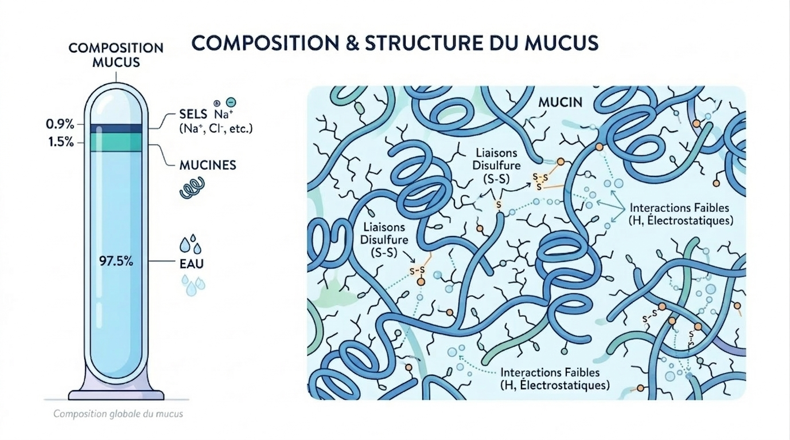
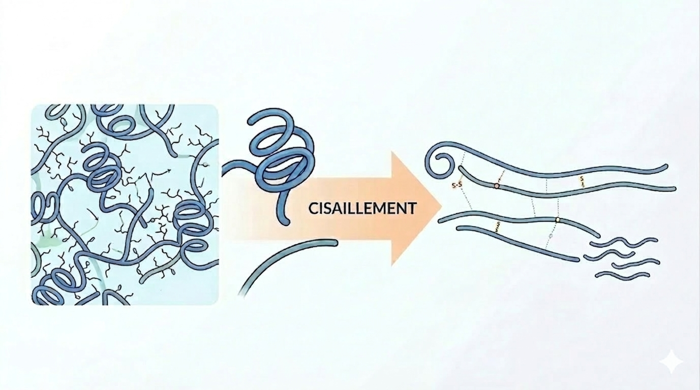

Désencombrement bronchique : Quand la chimie explique le geste du kinésithérapeute
Lors de mon stage en service de réanimation, j’ai pu observer la vulnérabilité respiratoire des patients, souvent accentuée par le recours à une assistance respiratoire invasive. Qu'il s'agisse d'une sonde d’intubation ou d'une canule de trachéotomie, ces dispositifs exposent systématiquement au risque d’encombrement bronchique.
Pour comprendre le rôle du kinésithérapeute dans la prise en charge d'un encombrement bronchique, j’ai dû plonger dans la physico-chimie du mucus.
Le rôle du mucus dans la protection des voies respiratoires
Véritable barrière protectrice des voies respiratoires, le mucus agit comme un filtre en piégeant les bactéries, les virus et les particules de poussières avant qu'elles n'atteignent les zones profondes des poumons. Ce mucus chargé d’impuretés est ensuite transporté vers les voies aériennes supérieures grâce au mouvement des cils vibratiles : ce mécanisme appelé clairance mucociliaire, permet leur élimination vers l’extérieur.
Parallèlement à ce rôle de protection, le mucus assure également l'hydratation et la lubrification de la paroi respiratoire, empêchant ainsi l'air inspiré de la dessécher ou de l'irriter.
Ce double rôle s’explique par sa structure chimique. Cet hydrogel est composé à 97,5% d’eau, 0,9% de sels et 1,5% de molécules organiques, principalement des mucines. Ces protéines forment un réseau tridimensionnel dont la structure particulière lui confère des propriétés physico-chimiques caractéristiques :
- La viscosité : elle est due aux liaisons covalentes fortes (ponts disulfures S-S) qui lient les mucines entre elles, permettant de capturer efficacement les impuretés.
- L'élasticité : elle repose sur des liaisons réversibles de faible énergie. Ces liaisons peuvent se rompre sous une contrainte mécanique, permettant au mucus de se déformer et de se reformer.
- La rétention d'eau : : les groupements chimiques des mucines retiennent l’eau, ce qui garde les muqueuses hydratées et permet au mucus de s’écouler facilement.

Le basculement vers l'encombrement
L'équilibre est rompu lorsque le mucus devient hyperconcentré et déshydraté, un phénomène central dans les maladies muco-obstructives comme la mucoviscidose ou la BPCO. Dans ces conditions, le poids sec du mucus peut être 5 à 10 fois supérieur à la normale. Cette déshydratation transforme le gel protecteur en une substance ultra-visqueuse et adhésive, qui écrase les cils vibratiles, empêchant toute évacuation naturelle. Des plaques et des bouchons de mucus se forment alors, obstruant le passage de l’air et créant des zones d’hypoxie. L’accumulation de ce mucus stagnant empêche l'élimination des bactéries, formant un terrain propice à l'inflammation chronique et à l'infection.
Le rôle du kinésithérapeute
Face à une clairance mucociliaire défaillante, le kinésithérapeute intervient pour compenser mécaniquement ce manque. Son rôle est de mobiliser les sécrétions de la périphérie pulmonaire vers les voies aériennes supérieures afin d'en faciliter l'expulsion. En modulant avec précision les pressions et les flux, il vainc l'inertie d'un mucus devenu trop visqueux ou adhérent.
Le geste technique : l'Augmentation du Flux Expiratoire (AFE), consiste à accompagner le mouvement naturel d'expiration en appliquant une pression qui s'intensifie au fur et à mesure que les poumons se vident. Cette action augmente la pression à l’extérieur des bronches (pression intrapleurale) jusqu'à ce qu'elle soit supérieure à la pression à l'intérieur de celles-ci (pression intrabronchique).
Ce phénomène provoque une compression dynamique des voies aériennes, réduisant localement le diamètre de la bronche. Cette réduction de calibre génère une augmentation transitoire et localisée de la vitesse de l'air et de son degré de turbulence.
C’est cette accélération de l’air qui permet l'interaction air-mucus nécessaire au désencombrement. Le flux d’air frotte contre le mucus, générant une force de cisaillement.
Sous l'effet du cisaillement, l'énergie mécanique apportée est suffisante pour rompre temporairement les liaisons faibles du mucus. Cette contrainte agit sur :
- L'adhésion : elle rompt les liaisons entre le mucus et la paroi bronchique pour décoller le mucus.
- La cohésion : elle fragmente les agglomérats de mucus en brisant leurs liaisons internes, réduisant ainsi leur viscosité.
A noter : Ces effets sont possibles grâce au comportement non newtonien du mucus. Sous la contrainte mécanique, les liaisons faibles des mucines se rompent, entraînant une réorganisation de la structure et diminuant ainsi sa viscosité. Ce comportement non newtonien se manifeste de deux façons :
- Pseudoplasticité : le mucus devient plus fluide instantanément sous cisaillement rapide
- Thixotropie : le mucus devient plus fluide progressivement sous contrainte prolongée
Une fois ces liaisons rompues, le mucus devient donc moins visqueux et peut être entraîné dans le sens du flux, libérant ainsi les voies respiratoires.

En résumé
La physicochimie du mucus permet de comprendre pourquoi augmenter le flux expiratoire, comme le fait le kinésithérapeute lors d’un encombrement bronchique, aide à mobiliser et évacuer les sécrétions.
En modulant les pressions pour créer un effet de cisaillement, le praticien diminue la viscosité du mucus. Celui-ci devient alors plus fluide, ce qui facilite sa mobilisation et son évacuation. Ce mécanisme repose sur le caractère non newtonien du mucus : sa viscosité diminue lorsqu’il est soumis à une contrainte.
En restaurant artificiellement la clairance via l'augmentation du flux expiratoire, le kinésithérapeute brise alors le cycle de l’encombrement bronchique, protégeant l’intégrité pulmonaire du patient.